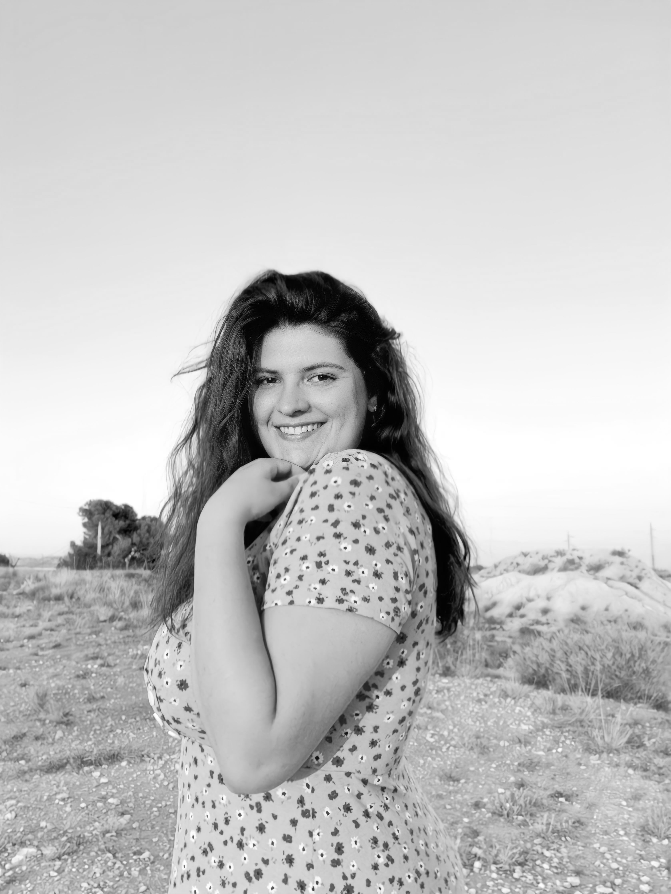

¡Hola! Mi nombre es María Durán Marín y soy Las Tres Tildes que protagonizan este espacio.
Mi entorno más cercano siempre dice que mi creatividad y pasión por el arte y las manualidades me han impulsado hasta donde estoy hoy, que siempre me encierro en mi mundo y que no puedo parar de inventar o querer probar cosas nuevas.
Actualmente, estoy cursando Estudios Superiores de Diseño Gráfico en la Escuela de Arte y Superior de Diseño de Alicante (EASDA) y estoy trabajando en ampliar mis conocimientos y descubrir nuevos aspectos del diseño.